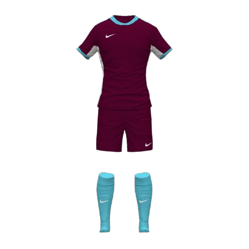
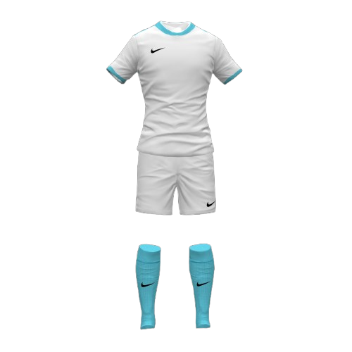
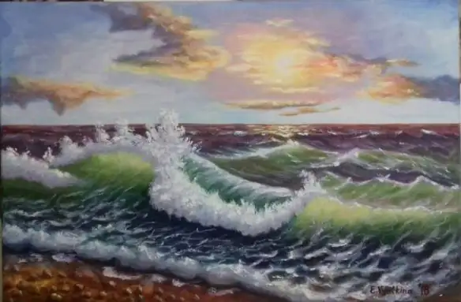
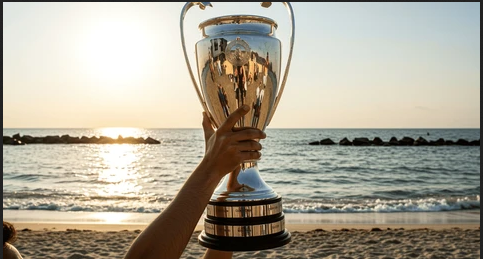

La Légende des "Grenats de l'Océan"
1. La Fondation (1924) :
L’alliance de la terre et de la mer Le club naît d'une fusion improbable entre les dockers du port et les vignerons des collines environnantes. Pour sceller cette union, ils choisissent le Bordeaux (rappelant le vin et le sang versé à l'effort) et le Bleu Ciel (couleur de l'horizon marin par temps calme). On raconte que le premier jeu de maillots fut teint avec du jus de raisin et de la nacre broyée.


2. L'Âge d'Or : Le Miracle des Falaises (1970-1975)
Pendant des décennies, le FC Maritime reste un club modeste. Tout change en 1972, sous l'impulsion de l'entraîneur mystique Silas "L'Amiral" Vane. Il impose un style de jeu révolutionnaire basé sur le ressac : une défense qui recule pour mieux aspirer l'adversaire avant de contre-attaquer comme une déferlante. Le club remporte alors sa première Coupe Nationale, devenant le "Petit Poucet" qui a fait trembler les géants.

3. La Grande Tempête (1998)
Une terrible tempête détruit les tribunes en bois de l'ancien stade. Ruiné, le club faillit disparaître. C’est la solidarité des supporters, surnommés les "Veilleurs", qui sauve l'institution : chaque habitant de Port-Saphir donne une journée de salaire pour reconstruire ce qui deviendra l'actuel Stade des Falaises. C'est de là que vient la devise : « In Tempestate, Lux » (Dans la tempête, la lumière).

4. Aujourd’hui : Vers les sommets
Aujourd'hui, l'Étoile Maritime FC est reconnu pour son centre de formation, "La Forge Marine", qui produit des joueurs techniques et endurants. Le club est devenu le symbole d'une ville qui ne baisse jamais les bras, portant fièrement ses couleurs bordeaux et bleu ciel sur tous les terrains du pays. Anecdote Célèbre: Avant chaque coup d'envoi à domicile, le capitaine de l'équipe plonge une étoile de mer dans un sceau d'eau salée prélevée le matin même au port. Un rituel censé garantir la protection de l'océan durant les 90 minutes de jeu.
